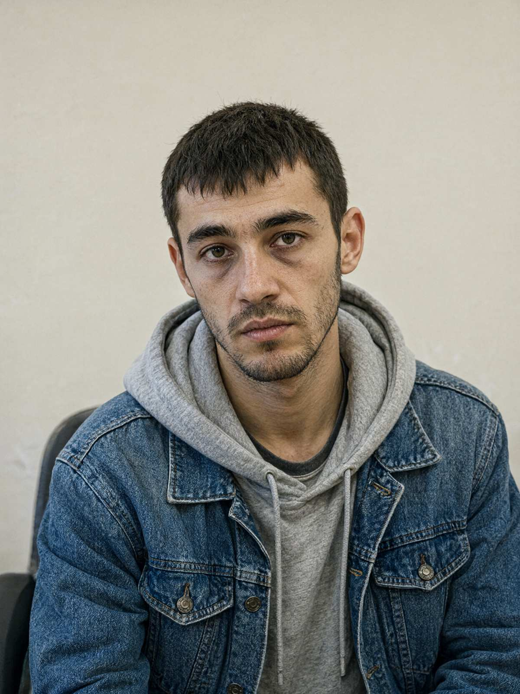

м. Івано-Франківськ, 16 жовтня 2026 року, 13:35–14:10
Місце: вул. Пасічна, 41-А, веранда житлового будинку
Пояснення відібрав: майор поліції Волков Д.С., старший слідчий в ОВС СУ ГУНП в Івано-Франківській області, у кримінальному провадженні № 12026090010002417. Присутній: оперуповноважений СКП капітан поліції Кузик А.Р.
Особа, що дає пояснення (зі слів): Яковишин-Россі Олександр, 14.10.2001 р.н., уродженець м. Неаполь (Італія), громадянин Італії. Проживає: м. Івано-Франківськ, вул. Пасічна, 41-А (з 08.08.2026). Тел. +380 93 207 55 18. Документів, що посвідчують особу, не надав. Від перекладача відмовився: «я українською, бо мама навчила».
Роз'яснення прав. Роз'яснено, що відповідно до ст. 63 Конституції України особа не зобов'язана давати пояснення щодо себе, членів своєї сім'ї та близьких родичів; пояснення дається добровільно.
Питання: Назвіть себе й розкажіть, як ви опинилися в Івано-Франківську.
Allora… Олександр Яковишин-Россі. Сашко. Народився чотирнадцятого жовтня дві тисячі першого, в Неаполі. Позавчора мені було двадцять п'ять, бабця торт спекла. Мама — Олена Яковишин. Тата я майже не пам'ятаю, він пішов, коли я був малий.
Мама померла цього літа, в червні, і перед смертю сказала шукати бабусю. Дала адресу: Пасічна, сорок один. Я приїхав, а тут — новобудови, сорок перший — то цілий ЖК. Я не знав, куди йти. Тоді люди з фонду «Родина» допомогли, вони тут усіх старих людей знають. Вони допомогли знайти бабусю. Восьмого серпня я прийшов. Бабця плакала. Я теж.
Питання: Де ваші документи?
Італійський паспорт загубив у дорозі, відновлюю через консульство. Їхав автобусом, через Польщу, на якійсь заправці сумку вкрали. Allora, там був паспорт.
Питання: Яке консульство? Коли подали заяву?
Ну… у Львові. Чи в Києві. Мені фонд допомагає, вони знають, як це робиться. Я в документах не дуже.
Питання: Ваш номер телефону?
Plus trentotto… ой. Плюс триста вісімдесят, дев'яносто три, двісті сім, п'ятдесят п'ять, вісімнадцять. Українська SIM, купив, як приїхав.
Питання: Де ви жили в Неаполі? Ким працювала мама?
Біля моря. Там усе біля моря. Мама працювала… в сім'ї, доглядала старих. Як усі наші там.
Питання: Скажіть щось італійською.
Grazie. Nonna. Allora… (далі замовк, засміявся нервово) Я давно не говорив, забув. Мама зі мною вдома тільки українською, щоб я знав, звідки я.
Питання: Чим займаєтеся в Україні?
Допомагаю бабці. Дрова рубаю, курей годую. Ще волонтерю у фонді «Родина» — гуманітарку пакую, їжджу з ними. Вони добрі люди. Вони допомогли знайти бабусю, я їм винен.
Питання: Що ви робили ввечері 15 жовтня і вночі?
Був удома. Ліг об одинадцятій. Спав. Чув, що Бровко гавкав десь коло дванадцятої, але він завжди гавкає. Зранку бабця закричала, я вибіг — а там поліція.
Питання: Біля ґанку шість недопалків «Прилуки». Ви вночі виходили курити?
Ні. То вдень. Бабця не дає в хаті курити. «Прилуки», бо тут італійських нема. (Просить сигарету. Слідчий не курить; сигарету надав оперуповноважений Кузик А.Р.) Grazie.
Питання: Ви знали Палійчука Василя Івановича?
Бачив кілька разів вранці з кавою. Він бабці каву носив. Ввічливий. «Добрий день» казав. Більше я з ним не говорив.
Питання: Увечері 15 жовтня він приходив до вашої бабусі?
Я не бачив. Я у своїй кімнаті був, у навушниках. (Довго дивиться у вікно.)
Питання: Чи можете ви чимось підтвердити свою особу? Фото, листи мами, хоч щось?
Все було в сумці. Я ж кажу — вкрали. Бабця мене впізнала. Хіба цього мало?
Зі слів записано вірно, мною прочитано. Зауважень не маю.
Примітка слідчого: Особа нервова; документів, що посвідчують особу, не надала. Під час розмови кілька разів перепитував, «що буде з бабцею».